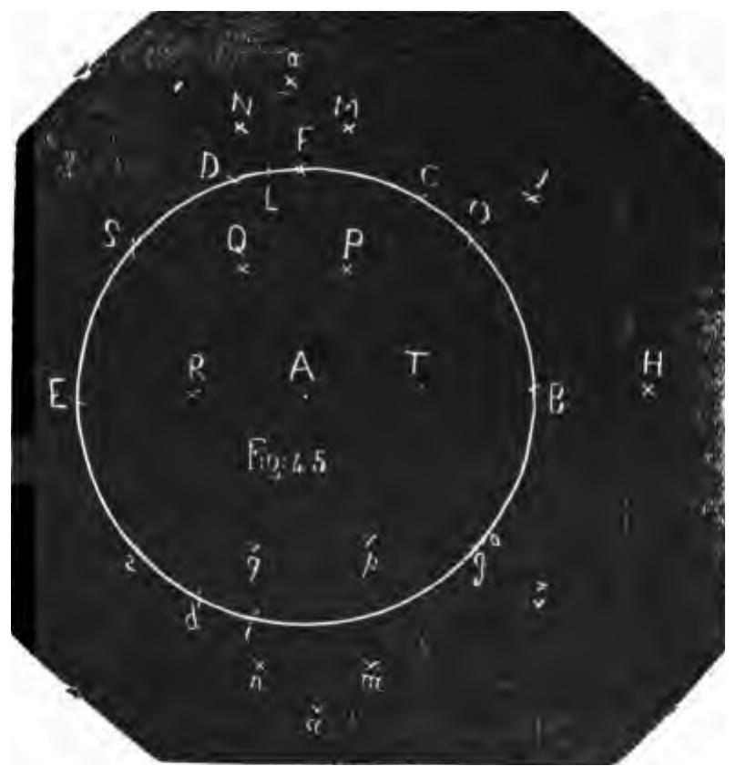

§§ 104–107: Mezze radici ½√1 fino a ½√25 (Fig. 45)¶
104. Prob. Trovare (fig. 45) facilmente la metà delle radici dei numeri interi dall’uno fino al venticinque.
Sol. Preso il raggio \(AB\) eguale ad uno, col centro \(A\) si descriva il cerchio \(BDd\), e nella sua circonferenza si faccia ad \(AB = BC = CD = DE = Ed\).
Col centro \(B\), e col raggio \(BD\) si descriva un arco, che passi pei punti \(a, N, D, d, n, \alpha\).
Collo stesso raggio, e col centro \(E\) si descriva un arco, che passi pei punti \(a, M, C, m, \alpha\).
Col raggio \(Aa\), e col centro \(B\) si descriva un arco, che passi pei punti \(M, F, Q, q, m\).


Collo stesso raggio, e col centro \(E\) si descriva un arco, che passi pei punti \(N, F, P, p, n\).
Col raggio \(AB\), e col centro \(B\) si descriva un arco, che passi per \(P\) e \(p\).
Collo stesso raggio, e col centro \(E\) si descriva un arco, che passi per \(Q\) e \(q\).
Collo stesso raggio, e col centro \(P\) si descriva un arco, che passi per \(R\), e tagli la circonferenza in \(S\); col centro \(p\) si segni un altro arco, che tagli il primo in \(R\), e la circonferenza in \(s\).
Collo stesso raggio, e coi centri \(Q\), \(q\) si descrivan due archi, che si taglino in \(T\), e taglino la circonferenza in \(O\) ed \(o\).
Collo stesso raggio, e col centro \(\alpha\) si tagli con un arco la circonferenza in \(g\). Col centro \(R\) si tagli con un arco la circonferenza in \(L\) ed \(l\). Coi centri \(O\) ed \(o\) si segnino due archi, che si taglino in \(H\). Coi centri \(H\) e \(T\) si segnino due archi, che si taglino in \(V\) e \(v\). Sarà
Dim. Se si confrontino i punti \(P, B, p, R, E\) di questa figura coi punti \(A, p, B, P, Q\) della fig. 3 per mezzo dell’equazione del § 18 \((AQ)^2 = (Ap)^2 + pQ \cdot PQ\), si otterrà l’equazione per questa figura \((PE)^2 = (PB)^2 + BE \cdot RE\); ossia \((Aa)^2 = (AB)^2 + 2AB \cdot RE\); ossia (§ 27) \(2 = 1 + 2RE\). Quindi \(RE = \frac{1}{2}AE\), e poichè \(R\) è sulla stessa retta \(BAE\) (§ 13), sarà anche \(RA = \frac{1}{2}AE = \frac{1}{2} = \frac{1}{2}\sqrt{1}\).
Essendo il punto \(T\) alla metà della \(AB\) per la stessa
f. 0080 · p. 55ragione, colla quale si è dimostrato, che il punto \(R\) è alla metà della \(AE\); sarà \(AT = RE\), quindi confrontandosi i punti di questa fig. 45, \(Q, T, q, E, R\) coi punti \(A, q, B, Q, P\) della fig. 3, il punto \(A\) della fig. 45 sarà il punto \(p\) della fig. 3. Dunque dall’equazione del § 16, \((AQ)^2 = (AP)^2 + (PQ)^2 + Pp \cdot PQ\) si ricaverà per questa fig. 45 l’equazione \((QE)^2 = (RQ)^2 + (RE)^2 + AR \cdot RE\); ossia sostituendo i valori numerici \(1 = (RQ)^2 + \frac{1}{4} + \frac{1}{4}\). Quindi \((RQ)^2 = \frac{1}{4} \cdot 2\); \(RQ = \frac{1}{2}\sqrt{2}\).
Confrontando i punti \(D, A, d, E\) di questa figura 45, coi punti \(P, A, p, B\) della fig. 3, resterà dimostrato dal § 14, che le due \(AE, Dd\) si taglino vicendevolmente in due parti eguali. Ma la \(AE\) è tagliata in due parti eguali in \(R\); dunque anche la \(Dd\). Ma \(Dd = BD = \sqrt{3}\) (§ 2). Dunque \(RD = \frac{1}{2}\sqrt{3}\).
Si ritenga, che la \(DRd\) è anche perpendicolare alla \(AE\) (§ 14).
Si ha poi \(RP = 1\). Dunque \(RP = \frac{1}{2}\sqrt{4}\).
Essendo retto l’angolo \(FAR\) (§ 27); si ha \((RF)^2 = (FA)^2 + (AR)^2 = 1 + \frac{1}{4} = \frac{5}{4}\). Dunque \(RF = \frac{1}{2}\sqrt{5}\).
Essendo la base \(BAE\) del triangolo \(BME\) tagliata per metà dalla retta \(AM\); si avrà pel § 26, \((BM)^2 + (EM)^2 = 2(AB)^2 + 2(AM)^2\); cioè \((Aa)^2 + (BD)^2 = 2(AB)^2 + 2(AM)^2\); cioè \(2 + 3 = 2 + 2(AM)^2\). Quindi \(6 = 4(AM)^2\); \(\sqrt{6} = 2AM\); \(AM = \frac{1}{2}\sqrt{6}\).
Essendosi confrontati qui sopra i punti \(Q, T, q, E, R, A\) di questa Fig. 45 coi punti \(A, q, B, Q, P, p\) della Fig. 3, risulterà dal § 13 essere in questa Fig. 45 \(AQ = Aq = QR = Rq\). Per le stesse ragioni risulterà essere eguali tra loro, ed a queste quattro le quattro \(AP, Ap, PT, Tp\). Avendo dunque i due triangoli isosceli \(PTA, QAR\) tutti i lati eguali tra loro; sarà l’angolo \(PAT = QRA\) (8, lib. I), ed essendo \(TAR\) retta, sarà \(PA\) parallela a \(QR\) (29, lib. I). Quindi anche \(PQ\) eguale e parallela alla \(AR\) (33, lib. I).
Ma \(Qq\) è perpendicolare alla \(AR\) (§ 14). Dunque anche alla \(PQ\) (27, lib. I). Si hanno poi nei due triangoli \(PAT, RAq\) i due angoli \(PAT, RAq\) eguali (8, lib. I), e \(TAR\) retta. Dunque essendo eguali a due retti i due angoli \(PAT, PAR\) (13, lib. I),
f. 0081 · p. 56lo saranno anche i due \(PAR, RAq\). Quindi sarà retta anche la \(PAq\), (14, lib. I). Dunque \((Pq)^2 = (2RQ)^2 = (PQ)^2 + (Qq)^2\) (47, lib. I); cioè \(2 = \frac{1}{4} + (Qq)^2\); quindi \(\frac{7}{4} = (Qq)^2\), e \(Qq = \frac{1}{2}\sqrt{7}\).
Si ha poi \((Aa)^2 = 2\) (§ 27) \(= \frac{8}{4}\). Quindi \(Aa = \frac{\sqrt{8}}{\sqrt{4}} = \frac{1}{2}\sqrt{8}\).
Sia pure \(BR = \frac{3}{2} = \frac{1}{2}\sqrt{9}\).
Se si confrontino i punti \(B, L, R, l, A\) di questa Fig. 45 coi punti \(Q, A, p, B, P\) della Fig. 3; dall’equazione \((AQ)^2 = (AP)^2 + (PQ)^2 + Pp \cdot PQ\) del § 16 si ricaverà l’equazione per questa Figura 45 \((BL)^2 = (LA)^2 + (AB)^2 + AR \cdot AB\); ossia \((BL)^2 = 1 + 1 + \frac{1}{2} = \frac{10}{4}\). Quindi \(BL = \frac{1}{2}\sqrt{10}\).
I due triangoli \(PSA, PBA\) hanno i lati rispettivamente eguali. Dunque si ha l’angolo \(SPA = PAB\) (8, lib. I). Quindi sono parallele le \(PS, BA\) (28, lib. I). Ma la \(Pp\) taglia ad angoli retti la \(BR\) (§ 14). Dunque sarà perpendicolare anche alla \(PS\) (27, lib. I). Nella stessa maniera poi, che si è dimostrato essere \((Qq)^2 = \frac{7}{4}\), si dimostrerà pure essere \((Pp)^2 = \frac{7}{4}\). Quindi avendosi \((pS)^2 = (Pp)^2 + (PS)^2\) (47, lib. I); si avrà \((pS)^2 = \frac{7}{4} + 1 = \frac{11}{4}\); quindi \(pS = \frac{1}{2}\sqrt{11}\).
Si ha poi \((BD)^2 = 3\) (§ 2) \(= \frac{12}{4}\). Quindi \(BD = \frac{1}{2}\sqrt{12}\).
Si ha pure \((HF)^2 = (HA)^2 + (AF)^2\); e dimostrandosi la \(QO\) parallela alla \(BE\) nella stessa guisa, che si è dimostrato della \(PS\); saranno i punti \(O, P, Q, S\) nella stessa retta, e \(PO = QO - PQ = 1 - \frac{1}{2} = \frac{1}{2} = PQ\). Essendo dunque \(OP\) eguale e parallela tanto alla \(TA\), quanto alla \(TB\); saranno eguali e parallele anche le \(OT, PA\); e le due \(OB, PT\) fra loro (33, lib. I). Ma si è dimostrato qui sopra essere \(PT = PA\). Dunque sarà anche a queste \(= OT = OB\). Per la stessa ragione dall’altra parte le \(oT, oB\) saranno eguali alla \(pA = PA\). Se ora si confrontino i punti \(O, o, A, T, B, H\) coi punti \(A, B, Q, P, p, q\) della Fig. 3, si ricaverà dal § 14 essere \(HB = AT = \frac{1}{2}\). Sarà dunque \((HA)^2 = (\frac{3}{2})^2 = \frac{9}{4}\); quindi \((HF)^2 = \frac{9}{4} + 1 = \frac{13}{4}\) e \(HF = \frac{1}{2}\sqrt{13}\).
Se si confrontino i punti \(E, O, H, o, A\) coi punti \(Q, A, p, B, P\) della Fig. 3; dall’equazione \((AQ)^2 = (AP)^2 + (PQ)^2 + Pp \cdot PQ\) del § 16, si ricaverà per questa Figura \((EO)^2 = (OA)^2 + (AE)^2 + HA \cdot AE = 1 + 1 + \frac{3}{2} = \frac{7}{2} = \frac{14}{4}\). Quindi \(EO = \frac{1}{2}\sqrt{14}\).
In seguito se si confrontino i punti \(A, R, L, Q, q, l\) di questa Fig. 45 coi punti \(A, B, Q, P, p, q\) della fig. 3,
f. 0082 · p. 57avendosi (§ 15) l’equazione per la fig. 3, \((QM)^2 = (AQ)^2 - (AM)^2\), e moltiplicando per 4, \(4(QM)^2 = 4(AQ)^2 - 4(AM)^2\), ossia \((Qq)^2 = 4(AQ)^2 - (AB)^2\); si ricaverà per questa Fig. 45, \((Ll)^2 = 4(AL)^2 - (AR)^2 = 4 - \frac{1}{4} = \frac{15}{4}\), quindi risulta \(Ll = \frac{1}{2}\sqrt{15}\).
Si ha poi \(BE = 2 = \frac{1}{2} \cdot 4 = \frac{1}{2}\sqrt{16}\).
Per l’angolo retto \(aAH\) (§ 27), si ha \((Ha)^2 = (HA)^2 + (Aa)^2 = (\frac{3}{2})^2 + 2 = \frac{17}{4}\); quindi \(Ha = \frac{1}{2}\sqrt{17}\).
Dimostrandosi nella stessa guisa essere \((AN)^2 = \frac{3}{2}\), come si è dimostrato di \((AM)^2\); così pure \((An)^2 = \frac{3}{2}\); a cagione che \(NR\) taglia per metà la base \(AE\) del triangolo \(ANE\), si avrà (§ 26) \((AN)^2 + (NE)^2 = 2(AR)^2 + 2(RN)^2\); cioè \(\frac{3}{2} + 2 = \frac{2}{4} + 2(RN)^2\); e riducendo si trova \((RN)^2 = \frac{3}{2} = (AN)^2\). Egualmente si trova \((Rn)^2 = \frac{3}{2}\). Se ora si confrontano i punti \(H, N, R, n, A\) di questa Figura 45 coi punti \(Q, A, p, B, P\) della Fig. 3; dall’equazione \((AQ)^2 = (AP)^2 + (PQ)^2 + Pp \cdot PQ\) del § 16, si ricaverà per la Figura 45 l’equazione \((HN)^2 = (AN)^2 + (AH)^2 + AR \cdot AH\), cioè \((HN)^2 = \frac{3}{2} + \frac{9}{4} + \frac{3}{4} = \frac{18}{4}\). Quindi risulta \(HN = \frac{1}{2}\sqrt{18}\).
Essendo la \(DR\) perpendicolare alla \(AE\), cioè alla \(HR\); sarà \((HD)^2 = (HR)^2 + (RD)^2\) (47, lib. I) \(= 4 + \frac{3}{4} = \frac{19}{4}\); quindi \(HD = \frac{1}{2}\sqrt{19}\).
Essendo la base \(aA\alpha\) del triangolo \(ag\alpha\) tagliata per mezzo della retta \(gA\); si avrà (§ 26) \((ag)^2 + (\alpha g)^2 = 2(Aa)^2 + 2(Ag)^2\); ossia \((ag)^2 + 1 = 4 + 2\); e \((ag)^2 = 5 = \frac{20}{4}\); quindi \(ag = \frac{1}{2}\sqrt{20}\).
Essendo i due triangoli \(HTV, AED\) di lati eguali tra loro; quindi l’angolo \(VTH = DEA\) (8, lib. I), ed essendo i punti \(H, T, A, E\) sulla stessa retta; sarà la \(VT\) parallela alla sua eguale \(DE\) (29, lib. I) quindi anche la \(VD\) parallela ed eguale alla \(TE\) (33, lib. I). Ma la \(Dd\) è perpendicolare alla \(AE\), cioè alla \(TE\); dunque anche alla \(VD\) (27, lib. I). Quindi \((dV)^2 = (VD)^2 + (Dd)^2 = (TE)^2 + (BD)^2 = (\frac{3}{2})^2 + 3\) (§ 2) \(= \frac{9}{4} + \frac{12}{4} = \frac{21}{4}\); quindi \(dV = \frac{1}{2}\sqrt{21}\).
Essendosi dimostrata la \(PS\) eguale e parallela alla \(AE\); così la \(ps\) per la stessa ragione; sarà anche la \(SE\) eguale e parallela alla \(AP\) (33, lib. I); così la \(sE\) alla \(Ap\). Per l’eguaglianza e parallelismo delle tre \(PS, TR, ps\) si proverà istessamente l’eguaglianza delle \(RS, Rs\) alla \(PT, pT\) entrambe dimostrate eguali alla \(AP = RQ\). Confrontando ora i punti \(H, S, E, s, R\) di questa Figura coi punti \(Q, A, p, B, P\) della Fig. 3,
f. 0083 · p. 58dall’equazione \((AQ)^2 = (Ap)^2 + pQ \cdot PQ\) (§ 18) si ricaverà per questa Fig. 45, \((HS)^2 = (SE)^2 + EH \cdot RH = (RQ)^2 + EH \cdot RH = \frac{2}{4} + \frac{5}{2} \cdot 2 = \frac{22}{4}\). Quindi \(HS = \frac{1}{2}\sqrt{22}\).
Essendo la base \(AE\) del triangolo \(AME\) divisa per metà dalla \(MR\), si avrà (§ 26) \((AM)^2 + (EM)^2 = 2(RA)^2 + 2(RM)^2\); cioè \(\frac{6}{4} + 3 = \frac{2}{4} + 2(RM)^2\). Quindi riducendo risulta \((RM)^2 = 2 = (BM)^2 = (Bm)^2\); del qual valore si dimostra nella stessa guisa essere \((Rm)^2\). Quindi \(BM = MR = Rm = mB\). Se ora si confrontano i quattro punti \(B, M, R, m\) di questa Figura coi quattro punti \(A, Q, B, q\) della Fig. 3; avendosi dal § 15, \((QM)^2 = (AQ)^2 - (AM)^2\), e quindi \(4(QM)^2 = 4(AQ)^2 - 4(AM)^2\), cioè \((Qq)^2 = 4(AQ)^2 - (AB)^2\); si avrà per questa fig. 45, \((Mm)^2 = 4(BM)^2 - (BR)^2 = 8 - (\frac{3}{2})^2 = \frac{32}{4} - \frac{9}{4} = \frac{23}{4}\); quindi \(Mm = \frac{1}{2}\sqrt{23}\).
Essendo i triangoli \(BME, BnE\) di lati eguali tra loro, ed avendo entrambi la base comune \(BE\) divisa in due egualmente dalle \(AM, An\); dall’equazione del § 26 risulterà lo stesso valore per le due \(AM, An\). Avendo dunque i triangoli \(BAM, EAn\) i lati tra loro eguali, sarà l’angolo \(BAM = EAn\) (8, lib. I). Quindi a cagione della retta \(BAE\) essendo la somma dei due angoli \(MAB, MAE\) eguale a due retti (13, lib. I), sostituendo all’angolo \(MAB\) il suo eguale \(EAn\), sarà anche la somma dei due angoli \(MAE, EAn\) eguale a due retti. Quindi le due \(MA, An\) faranno una sola retta (14, lib. I). Sarà dunque \((Mn)^2 = 4(AM)^2 = \frac{24}{4}\). Quindi \(Mn = \frac{1}{2}\sqrt{24}\).
Finalmente \(HE = \frac{5}{2} = \frac{1}{2}\sqrt{25}\).
Quindi le due \(MA, An\) faranno una sola retta (14, lib. I). Sarà dunque \((Mn)^2 = 4(AM)^2 = \frac{24}{4}\). Quindi \(Mn = \frac{1}{2}\sqrt{24}\).
Finalmente \(HE = \frac{5}{2} = \frac{1}{2}\sqrt{25}\).
Quindi \(Mn = \frac{1}{2}\sqrt{24}\).
Finalmente \(HE = \frac{5}{2} = \frac{1}{2}\sqrt{25}\).
105. Essendo \(\frac{1}{2}\sqrt{n} = \sqrt{\frac{n}{4}}\); per esempio \(\frac{1}{2}\sqrt{7} = \sqrt{\frac{7}{4}}\) ecc., si avranno facilmente da questo Problema le radici di tutti i quarti dall’un quarto fino al venticinque quarti; il che sarà di uso nella costruzione delle Figure simili, come vedremo.
106. Se si fosse preso il raggio \(AB = 2\); le radici di tutti i quarti dall’un quarto fino al venticinque quarti; il che sarà di uso nella costruzione delle Figure simili, come vedremo.
106. Se si fosse preso il raggio \(AB = 2\); si sarebbero ottenute tutte queste distanze doppie di valore; quindi avremmo avute le radici intere dei numeri dall’uno fino al venticinque. Si potrebbe però facilmente raddoppiare qualunque di quelle mezze radici, che si volesse, per avere l’intera (§ 64).
107. La facilità di questa costruzione, che si eseguisce coi soli tre compassi delle tre aperture già osservate (§ 35) la prima \(= \sqrt{1}\), la terza \(= \sqrt{2}\), la seconda \(= \sqrt{3}\), coi quali si è già diviso il cerchio in 24 parti eguali, ed ora si sono trovate 25
f. 0084 · p. 59radici successive dei primi numeri; mostra l’eccellenza della Geometria del Compasso, e quanto possa servire alla perfezione delle Arti.